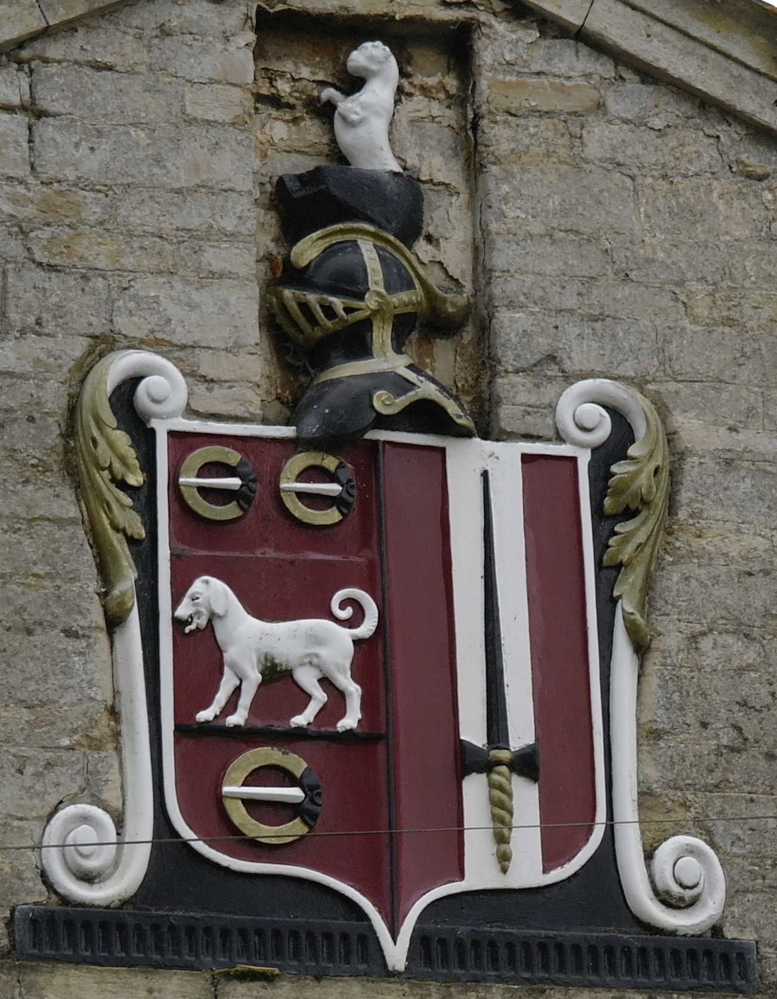

Posted to: The Google+ Heraldry Community
Posted by: Karl Wilcox
Created on: December 7 2012 at 10:19
To get us started, here's a beautiful coat of arms I spotted whilst out on a walk, near Redbourne, in Lincolnshire. I haven't had time to try to find the owners yet. You can find this shield on the gable end of the house to the left in this streetview image:
https://maps.google.com/?ll=53.488013,-0.53545&spn=91.944475,129.023437&t=v&z=3&layer=c&panoid=jLjn4BNk5pTid_JMMQ4xCg&cbll=53.488013,-0.53545&cbp=13,-7.620338675240058,,0,-3.2085636527325647
